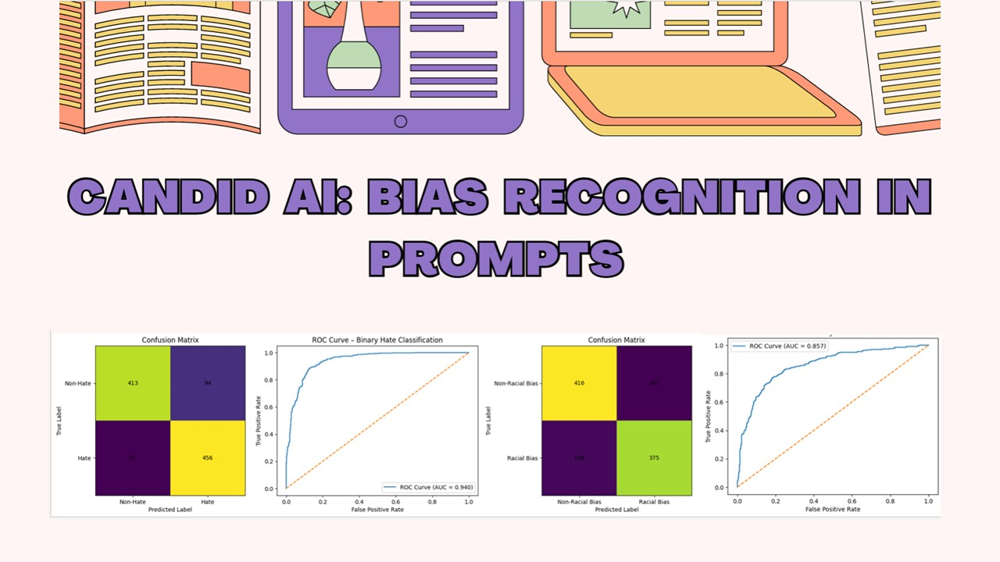
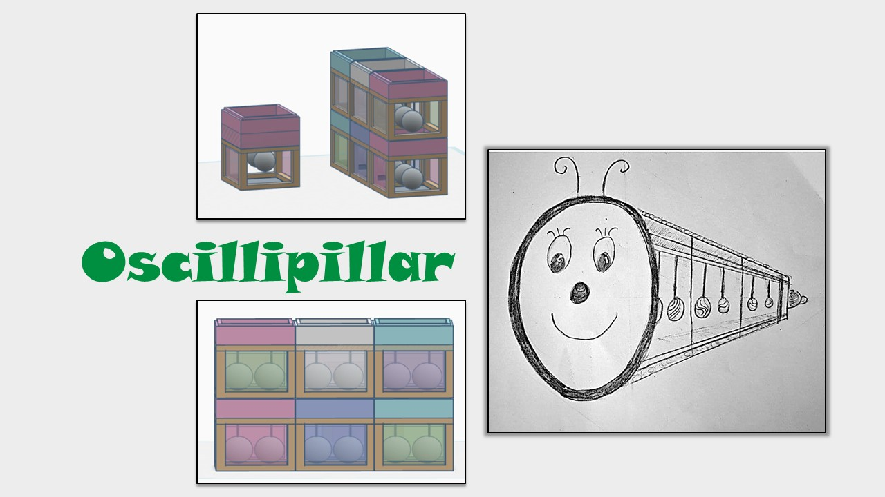

Honours Thesis
The Impact of Emotion in Visuospatial Working Memory
JSPC, OP Jindal Global University, 2024
Cognitive Sciences | Psychology | Research | Human AI Interaction | Social Impact
Questioning. Exploring. Discovering.

I have a Master’s degree in Cognitive Sciences, Learning & Technology and hold a Bachelor’s (Hons) degree in Psychology.
Delving deeper into Cognitive Sciences has shown me that there is always more to understand about the human mind. I see human experience as dynamic, shaped by the systems around us, including institutions, culture, relationships, and our interactions with the environment. Throughout my studies, my curiosity about human phenomena and my inclination to examine them from multiple perspectives have remained constant. Through my research projects, I have explored emotions, memory, decision-making, and learning, and I now hope to build on this foundation to understand the cognitive factors shaping Human-AI Interaction.
I am particularly drawn to interdisciplinary environments where diverse perspectives can come together to examine complex questions. While my foundation is in the social sciences, my Master’s journey has introduced me to deep learning, computational neuroscience, neurophysiology, and prompt engineering, alongside practical technical skills. I value the willingness to learn beyond my existing expertise, take on unfamiliar challenges, and build new foundations when needed.
My commitment to social good has also remained central to my journey. I am motivated by causes including environmental protection, disaster management, nurturing environments for children, and equitable access to mental health. I hope to contribute to meaningful change by bringing together curiosity, interdisciplinary thinking, and a commitment to continuous learning.
I remain deeply committed to serving the social good. I am motivated to contribute to causes such as digital equity, mental health wellbeing, ethical and responsible AI, neurodiversity, inclusive education, and sustainability. I believe meaningful action can contribute to systemic change, and I want to be an active part of that process.

The Impact of Emotion in Visuospatial Working Memory
JSPC, OP Jindal Global University, 2024
Global Gender Differences in Access to Technology Support
SSBS, Amrita Vishwa Vidyapeetham, 2025-2026
Understanding How Teachers Classify Students' Affective States Using Quantitative and Qualitative Data
SSBS, Amrita Vishwa Vidyapeetham, 2025–Present

Developed a project website using Google Sites as part of the Cognitive Labyrinth Exhibition. Served as Digital Coordinator by designing QR codes for each stall and collaborating with station representatives to curate and showcase their content effectively on the platform.
International Conference of Gender and Technology 2025, Amrita Vishwa Vidyapeetham
Visit Website
Worked on Transfer Learning Neural Network to predict Dog Emotions and compared the model's prediction between Indian and International Dog Breeds. The project aimed to understand the differences in training accuracy of convolutional neural networks when using pretrained models, such as EfficientNet and MobileNet.
Part of Course, Department of Cognitive Sciences and Psychology, Amrita Vishwa Vidyapeetham, 2025
Team: Kaavya, Tuba
GitHub Repository
Applied BERT-based models to detect hate speech and racial bias in AI prompts. The project explored the use of natural language processing and transformer-based models for identifying harmful and biased language in AI-generated text.
Part of Course, Department of Cognitive Sciences and Psychology, Amrita Vishwa Vidyapeetham, 2025
Team: Kaavya, Varnika, Venkatesh, Chacko
GitHub Repository
Worked on a project that aimed to computationally model the single-neuron dynamics of Purkinje cells and Deep Cerebellar Nucleus neurons in the vermis region of the cerebellum using the Adaptive Exponential Integrate-and-Fire framework. The project was implemented in the NEURON simulation environment based on experimental studies, including Kim (2012).
Specialization Course, Mind Brain Centre, Amrita Vishwa Vidyapeetham, 2025
Team: Kaavya Lakshmi, Sruthi Santhosh Kumar, Lekshmi I

Participated in the Cognify toy design competition as part of a team. Designed Oscilipillar, an interactive, modular toy for children aged 3 to 5 years featuring oscillating, glitter-filled bobs that move like pendulums to capture visual attention and encourage coordinated eye movements.
Cognify - A Toy Design Contest, IIT Madras, 2024
Team: Kaavya, Steffy, Ajeetha
3D Design CertificateI'd love to hear from you. Feel free to reach out with opportunities or just to connect.